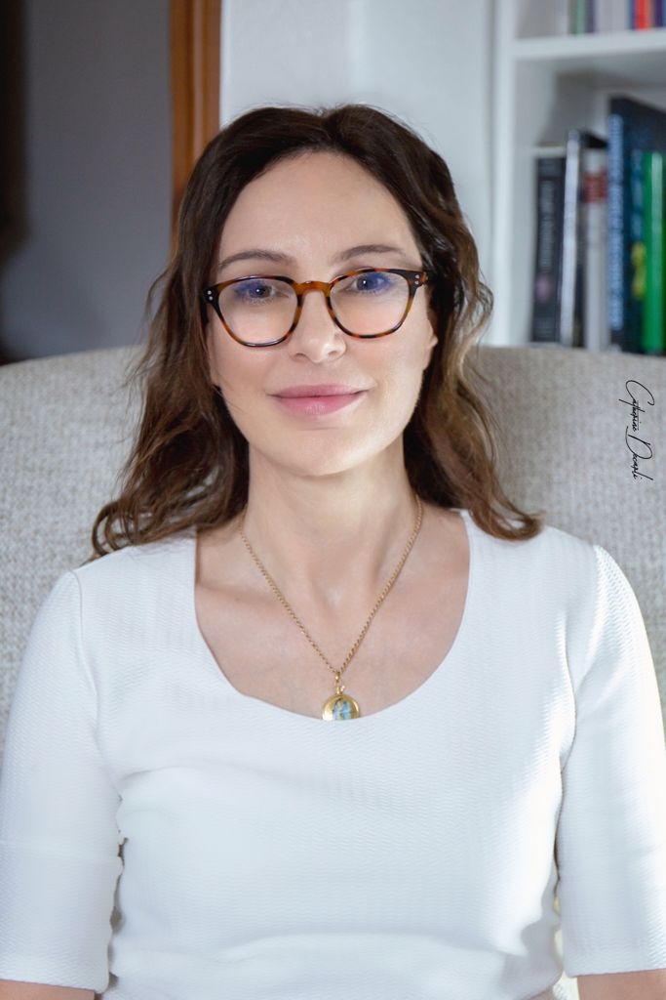

ABOUT ME

I am Barbara Zacchè Pincus, a psychosocial counsellor specialising in third-generation systemic NLP and a counselling supervisor with an integrative approach.
My training in relational counselling is complemented by mental coaching and ongoing study of the generative approaches developed by Robert Dilts and Stephen Gilligan. I have completed both Coaching of Creative Mind and Advanced Coaching of Creative Mind with Stephen Gilligan.
I am an SGfB-recognised counsellor, a member of ANCoRe, and an Associate Member of the International Association for Generative Change (IAGC).
Before becoming a counsellor, I worked in international business environments in marketing, sales, personnel management and client relations. My experience also includes volunteering with the SOS Infanzia telephone support service in Lugano.
Music is part of my life. I play the violin as an amateur musician and help organise cultural and orchestral activities and projects.
Having lived and worked in Italy, the United Kingdom and Switzerland, I bring an awareness of different cultural perspectives to my work, particularly around identity, belonging and relationships.
Ongoing training and supervision are integral to my professional practice.